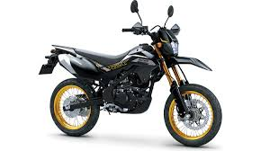
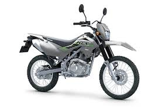

Katalog Unit Kendaraan - SANLI MOTOR

Kawasaki KLX 150
Tipe: SM-SE (Special Edition)
Tahun: 2025
Rp 43.800.000
Deskripsi:
Motor supermoto tangguh dengan tampilan edisi spesial.

Kawasaki KLX 150
Tipe: S
Tahun: 2025
Rp 37.500.000
Deskripsi:
Motor trail ramping dan lincah dengan performa tangguh.

Kawasaki KLX 150
Tipe: SE Plus
Tahun: 2025
Rp 43.600.000
Deskripsi:
Motor trail tangguh dengan aksesoris edisi spesial bawaan pabrik.

Motor Listrik X1
Daya: 500 Watt
Jarak Tempuh: ±40 km
Rp 5jt - Rp 6,5jt
Deskripsi:
Motor listrik praktis dan hemat,cocok untuk aktivitas harian.
Warna Tersedia:
💬 Info Unit